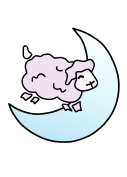

For this image, I used the gradient tool on the moon to make it lighter at the top. This adds depth and character, and matches the color difference between the sheep's face and the rest of his fur. To get the outline of the moon, I made a temporary layer with a black circle, and added a smaller white circle to overlap it, creating the crescent shape. Then in a new layer, I traced what was left of the black circle with the Bezier Curve tool, and modified the points until I got a smooth shape. To make the sheep, I used the pencil tool and then modified the points with the very useful "edit paths by nodes" tool. I think he turned out really cute!
So far, I adore InkScape and I'm so glad I'm learning it. It's a
straightforward, feature-rich and user-friendly software. I love how
it's specialized for making vector images. I will definitely be using
it in the future.
One software that I think is criminally
underrated is Krita. I learned how to use it when I got my tablet.
It's a lot like Gimp, but you are also able to make vector images with
it as well, although I have next to no experience using that part of
the program. I can't imagine it has all the options that InkScape has
since it's not specialized for vector images only, but I actually
prefer it to Gimp because unfortunately I was unable to get Gimp to
recognize pressure sensitivity for my Surface Pen, which acted like a
mouse the whole time. I love making images that look like they're
hand-drawn so it was a shame I was unable to do it solely in Gimp. If
you haven't tried Krita already, I highly recommend checking it out!
Let me know what you think :)